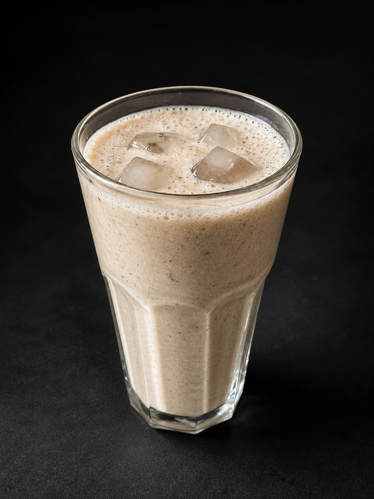

El Monstro
Pas pour une sèche : cette recette est pensée pour un bulk.

Ingrédients
- 150g de flocons d'avoine
- 20g de beurre de cacahuète
- 10g de miel
- 30g de whey
- 1 banane
- 300ml de lait demi-écrémé
Préparation
- Mixer le tout ensemble jusqu'à obtenir une texture homogène.
- Verser dans un grand verre.
- Ajouter quelques glaçons avant de boire.
Valeurs nutritionnelles (approx.)
Par portion : 1065 kcal • 58 g protéines • 25 g lipides • 143 g glucides • 20 g fibres